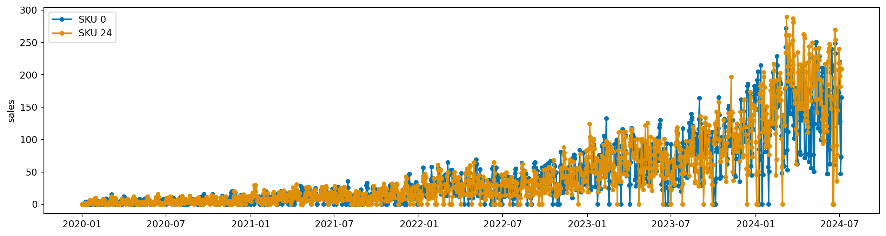
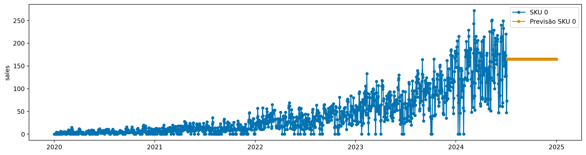

from sktime.datatypes import get_examples
get_examples(mtype="np.ndarray", as_scitype="Series")[0]array([[ 1. ],
[ 4. ],
[ 0.5],
[-3. ]])O sktime oferece um ecossistema robusto, mas em cenarios reais frequentemente precisamos ajustar comportamentos, incorporar dados hierarquicos ou adicionar pre-processamentos especificos. Felizmente, o sktime torna relativamente simples a criacao de modelos customizados, desde que sigamos algumas regras.
Acredito que essa e uma das grandes vantagens da biblioteca: o foco em ser extensivel e customizavel.
Agora, vamos implementar um modelo simples de previsão, o CustomNaiveForecaster, que prevê o valor médio dos últimos n pontos da série temporal.
É um exemplo simples, mas que ilustra bem como criar um forecaster customizado com sktime.
from tsbook.datasets.retail import SyntheticRetail
dataset = SyntheticRetail("panel")
y_train, y_test = dataset.load("y_train", "y_test")
y_train| sales | ||
|---|---|---|
| sku_id | date | |
| 0 | 2020-01-01 | 0 |
| 2020-01-02 | 0 | |
| 2020-01-03 | 0 | |
| 2020-01-04 | 0 | |
| 2020-01-05 | 0 | |
| ... | ... | ... |
| 24 | 2024-07-01 | 218 |
| 2024-07-02 | 198 | |
| 2024-07-03 | 182 | |
| 2024-07-04 | 210 | |
| 2024-07-05 | 209 |
41200 rows × 1 columns
from sktime.utils.plotting import plot_series
plot_series(
y_train.loc[0],
y_train.loc[24],
labels=[
"SKU 0",
"SKU 24",
],
)
Abaixo, implementamos o CustomNaiveForecaster seguindo as regras do sktime (clique para expandir). Em seguida, explicamos passo a passo.
from sktime.forecasting.base import BaseForecaster
import pandas as pd
class CustomNaiveForecaster(BaseForecaster):
"""
A simple naive forecaster
Parameters
----------
n : int
Number of past values to use.
"""
_tags = {
"requires-fh-in-fit": False,
"y_inner_mtype": [
"pd.Series",
],
}
# Add hyperparameters in init!
def __init__(self, n=1):
# 1. Set hyper-parameters
self.n = n
# 2. Initialize parent class
super().__init__()
# 3. Check hyper-parameters
assert self.n > 0, "n must be greater than 0"
def _fit(self, y, X, fh):
"""
Fit necessary parameters.
"""
self.value_ = y.iloc[-self.n :].mean()
return self
def _predict(self, fh, X):
"""
Use forecasting horizon and optionally X to predict y
"""
# During fit, BaseForecaster sets
# self.cutoff to the latest cutoff time point
index = fh.to_absolute_index(self.cutoff)
y_pred = pd.Series(
index=index,
data=[self.value_ for _ in range(len(index))],
)
y_pred.name = self._y.name
return y_pred
# Veremos mais tarde como usar esse método
@classmethod
def get_test_params(cls, parameter_set="default"):
return [
{"n": 1},
{"n": 2},
]__init__O método __init__ possui 3 etapas:
super().__init__() para inicializar a classe pai.# Add hyperparameters in init!
def __init__(self, n=1):
# 1. Set hyper-parameters
self.n = n
# 2. Initialize parent class
super().__init__()
# 3. Check hyper-parameters
assert self.n > 0, "n must be greater than 0"No caso de algum preprocessamento dos hiperparâmetros no __init__, devemos guardar em uma variável com nome diferente do hiperparâmetro. Por exemplo, se tivéssemos interesse em ter um atributo n diferente do passado no __init__, poderíamos fazer:
self._n = n + 1O self.n funciona como uma digital do modelo, e deve ser exatamente o que foi passado no __init__.
_fitNo método _fit, devemos implementar a lógica de ajuste do modelo. No nosso caso, calculamos a média dos últimos n valores e armazenamos em self.value_.
O _ após o nome do atributo indica que é um atributo aprendido durante o ajuste, e será retornado quando chamarmos get_fitted_params().
Note que podemos supor que y é do tipo definido na tag y_inner_mtype, ou seja, uma pd.Series.
_predictNo método _predict, implementamos a lógica de previsão. Usamos o horizonte de previsão fh para determinar os índices futuros e retornamos uma série com o valor previsto para cada ponto no horizonte.
O fh é um objeto do tipo ForecastingHorizon, que possui o método to_absolute_index(cutoff) para converter o horizonte relativo em índices absolutos, considerando o último ponto conhecido (self.cutoff).
Retornamos um pd.Series com os índices e os valores previstos.
CustomNaiveForecasterAgora, já podemos usar o nosso modelo customizado para fazer previsões.
custom_naive_model = CustomNaiveForecaster()
custom_naive_model.fit(y_train)CustomNaiveForecaster()Please rerun this cell to show the HTML repr or trust the notebook.
CustomNaiveForecaster()
Como passamos um dado hierárquico, o sktime converteu automaticamente para pd.Series, que é o mtype suportado pelo nosso modelo. Os modelos internos, para cada série, ficam disponíveis em forecasters_.
custom_naive_model.forecasters_| forecasters | |
|---|---|
| 0 | CustomNaiveForecaster() |
| 1 | CustomNaiveForecaster() |
| 2 | CustomNaiveForecaster() |
| 3 | CustomNaiveForecaster() |
| 4 | CustomNaiveForecaster() |
| 5 | CustomNaiveForecaster() |
| 6 | CustomNaiveForecaster() |
| 7 | CustomNaiveForecaster() |
| 8 | CustomNaiveForecaster() |
| 9 | CustomNaiveForecaster() |
| 10 | CustomNaiveForecaster() |
| 11 | CustomNaiveForecaster() |
| 12 | CustomNaiveForecaster() |
| 13 | CustomNaiveForecaster() |
| 14 | CustomNaiveForecaster() |
| 15 | CustomNaiveForecaster() |
| 16 | CustomNaiveForecaster() |
| 17 | CustomNaiveForecaster() |
| 18 | CustomNaiveForecaster() |
| 19 | CustomNaiveForecaster() |
| 20 | CustomNaiveForecaster() |
| 21 | CustomNaiveForecaster() |
| 22 | CustomNaiveForecaster() |
| 23 | CustomNaiveForecaster() |
| 24 | CustomNaiveForecaster() |
y_pred = custom_naive_model.predict(fh=y_test.index.get_level_values(-1).unique())
fig, _ = plot_series(
y_train.loc[0],
y_pred.loc[0],
labels=[
"SKU 0",
"Previsão SKU 0",
],
)
fig.show()
O sktime também fornece uma funcionalidade que traz testes unitários prontos para validar se o modelo customizado está funcionando corretamente.
Ele usa os hiperparâmetros retornados pelo método get_test_params para criar instâncias do modelo e executar uma série de testes.
from sktime.utils.estimator_checks import check_estimator
check_estimator(CustomNaiveForecaster, tests_to_exclude=["test_doctest_examples"])All tests PASSED!{'test_create_test_instances_and_names[CustomNaiveForecaster]': 'PASSED',
'test_clone[CustomNaiveForecaster-0]': 'PASSED',
'test_clone[CustomNaiveForecaster-1]': 'PASSED',
'test_obj_vs_cls_signature[CustomNaiveForecaster]': 'PASSED',
'test_estimator_tags[CustomNaiveForecaster]': 'PASSED',
'test_no_between_test_case_side_effects[CustomNaiveForecaster-0-ForecasterFitPredictUnivariateWithX-0]': 'PASSED',
'test_no_between_test_case_side_effects[CustomNaiveForecaster-0-ForecasterFitPredictUnivariateWithX-1]': 'PASSED',
'test_no_between_test_case_side_effects[CustomNaiveForecaster-0-ForecasterFitPredictMultivariateNoX-0]': 'PASSED',
'test_no_between_test_case_side_effects[CustomNaiveForecaster-0-ForecasterFitPredictMultivariateNoX-1]': 'PASSED',
'test_no_between_test_case_side_effects[CustomNaiveForecaster-1-ForecasterFitPredictUnivariateWithX-0]': 'PASSED',
'test_no_between_test_case_side_effects[CustomNaiveForecaster-1-ForecasterFitPredictUnivariateWithX-1]': 'PASSED',
'test_no_between_test_case_side_effects[CustomNaiveForecaster-1-ForecasterFitPredictMultivariateNoX-0]': 'PASSED',
'test_no_between_test_case_side_effects[CustomNaiveForecaster-1-ForecasterFitPredictMultivariateNoX-1]': 'PASSED',
'test_get_test_params_coverage[CustomNaiveForecaster]': 'PASSED',
'test_no_cross_test_side_effects_part2[CustomNaiveForecaster-0]': 'PASSED',
'test_no_cross_test_side_effects_part2[CustomNaiveForecaster-1]': 'PASSED',
'test_valid_estimator_tags[CustomNaiveForecaster-0]': 'PASSED',
'test_valid_estimator_tags[CustomNaiveForecaster-1]': 'PASSED',
'test_has_common_interface[CustomNaiveForecaster]': 'PASSED',
'test_valid_estimator_class_tags[CustomNaiveForecaster]': 'PASSED',
'test_set_params[CustomNaiveForecaster-0]': 'PASSED',
'test_set_params[CustomNaiveForecaster-1]': 'PASSED',
'test_set_params_sklearn[CustomNaiveForecaster]': 'PASSED',
'test_inheritance[CustomNaiveForecaster]': 'PASSED',
'test_no_cross_test_side_effects_part1[CustomNaiveForecaster-0]': 'PASSED',
'test_no_cross_test_side_effects_part1[CustomNaiveForecaster-1]': 'PASSED',
'test_repr_html[CustomNaiveForecaster-0]': 'PASSED',
'test_repr_html[CustomNaiveForecaster-1]': 'PASSED',
'test_get_test_params[CustomNaiveForecaster]': 'PASSED',
'test_create_test_instance[CustomNaiveForecaster]': 'PASSED',
'test_get_params[CustomNaiveForecaster-0]': 'PASSED',
'test_get_params[CustomNaiveForecaster-1]': 'PASSED',
'test_repr[CustomNaiveForecaster-0]': 'PASSED',
'test_repr[CustomNaiveForecaster-1]': 'PASSED',
'test_constructor[CustomNaiveForecaster]': 'PASSED',
'test_random_tags[CustomNaiveForecaster]': 'PASSED',
'test_multiprocessing_idempotent[CustomNaiveForecaster-0-ForecasterFitPredictUnivariateWithX-predict]': 'PASSED',
'test_multiprocessing_idempotent[CustomNaiveForecaster-0-ForecasterFitPredictMultivariateNoX-predict]': 'PASSED',
'test_multiprocessing_idempotent[CustomNaiveForecaster-1-ForecasterFitPredictUnivariateWithX-predict]': 'PASSED',
'test_multiprocessing_idempotent[CustomNaiveForecaster-1-ForecasterFitPredictMultivariateNoX-predict]': 'PASSED',
'test_fit_idempotent[CustomNaiveForecaster-0-ForecasterFitPredictUnivariateWithX-predict]': 'PASSED',
'test_fit_idempotent[CustomNaiveForecaster-0-ForecasterFitPredictMultivariateNoX-predict]': 'PASSED',
'test_fit_idempotent[CustomNaiveForecaster-1-ForecasterFitPredictUnivariateWithX-predict]': 'PASSED',
'test_fit_idempotent[CustomNaiveForecaster-1-ForecasterFitPredictMultivariateNoX-predict]': 'PASSED',
'test_raises_not_fitted_error[CustomNaiveForecaster-0-ForecasterFitPredictUnivariateWithX-predict]': 'PASSED',
'test_raises_not_fitted_error[CustomNaiveForecaster-0-ForecasterFitPredictUnivariateWithX-get_fitted_params]': 'PASSED',
'test_raises_not_fitted_error[CustomNaiveForecaster-0-ForecasterFitPredictMultivariateNoX-predict]': 'PASSED',
'test_raises_not_fitted_error[CustomNaiveForecaster-0-ForecasterFitPredictMultivariateNoX-get_fitted_params]': 'PASSED',
'test_raises_not_fitted_error[CustomNaiveForecaster-1-ForecasterFitPredictUnivariateWithX-predict]': 'PASSED',
'test_raises_not_fitted_error[CustomNaiveForecaster-1-ForecasterFitPredictUnivariateWithX-get_fitted_params]': 'PASSED',
'test_raises_not_fitted_error[CustomNaiveForecaster-1-ForecasterFitPredictMultivariateNoX-predict]': 'PASSED',
'test_raises_not_fitted_error[CustomNaiveForecaster-1-ForecasterFitPredictMultivariateNoX-get_fitted_params]': 'PASSED',
'test_fit_updates_state[CustomNaiveForecaster-0-ForecasterFitPredictUnivariateWithX]': 'PASSED',
'test_fit_updates_state[CustomNaiveForecaster-0-ForecasterFitPredictMultivariateNoX]': 'PASSED',
'test_fit_updates_state[CustomNaiveForecaster-1-ForecasterFitPredictUnivariateWithX]': 'PASSED',
'test_fit_updates_state[CustomNaiveForecaster-1-ForecasterFitPredictMultivariateNoX]': 'PASSED',
'test_save_estimators_to_file[CustomNaiveForecaster-0-ForecasterFitPredictUnivariateWithX-predict]': 'PASSED',
'test_save_estimators_to_file[CustomNaiveForecaster-0-ForecasterFitPredictMultivariateNoX-predict]': 'PASSED',
'test_save_estimators_to_file[CustomNaiveForecaster-1-ForecasterFitPredictUnivariateWithX-predict]': 'PASSED',
'test_save_estimators_to_file[CustomNaiveForecaster-1-ForecasterFitPredictMultivariateNoX-predict]': 'PASSED',
'test_methods_have_no_side_effects[CustomNaiveForecaster-0-ForecasterFitPredictUnivariateWithX-predict]': 'PASSED',
'test_methods_have_no_side_effects[CustomNaiveForecaster-0-ForecasterFitPredictUnivariateWithX-get_fitted_params]': 'PASSED',
'test_methods_have_no_side_effects[CustomNaiveForecaster-0-ForecasterFitPredictMultivariateNoX-predict]': 'PASSED',
'test_methods_have_no_side_effects[CustomNaiveForecaster-0-ForecasterFitPredictMultivariateNoX-get_fitted_params]': 'PASSED',
'test_methods_have_no_side_effects[CustomNaiveForecaster-1-ForecasterFitPredictUnivariateWithX-predict]': 'PASSED',
'test_methods_have_no_side_effects[CustomNaiveForecaster-1-ForecasterFitPredictUnivariateWithX-get_fitted_params]': 'PASSED',
'test_methods_have_no_side_effects[CustomNaiveForecaster-1-ForecasterFitPredictMultivariateNoX-predict]': 'PASSED',
'test_methods_have_no_side_effects[CustomNaiveForecaster-1-ForecasterFitPredictMultivariateNoX-get_fitted_params]': 'PASSED',
'test_dl_constructor_initializes_deeply[CustomNaiveForecaster]': 'PASSED',
'test_persistence_via_pickle[CustomNaiveForecaster-0-ForecasterFitPredictUnivariateWithX-predict]': 'PASSED',
'test_persistence_via_pickle[CustomNaiveForecaster-0-ForecasterFitPredictMultivariateNoX-predict]': 'PASSED',
'test_persistence_via_pickle[CustomNaiveForecaster-1-ForecasterFitPredictUnivariateWithX-predict]': 'PASSED',
'test_persistence_via_pickle[CustomNaiveForecaster-1-ForecasterFitPredictMultivariateNoX-predict]': 'PASSED',
'test_non_state_changing_method_contract[CustomNaiveForecaster-0-ForecasterFitPredictUnivariateWithX-predict]': 'PASSED',
'test_non_state_changing_method_contract[CustomNaiveForecaster-0-ForecasterFitPredictUnivariateWithX-get_fitted_params]': 'PASSED',
'test_non_state_changing_method_contract[CustomNaiveForecaster-0-ForecasterFitPredictMultivariateNoX-predict]': 'PASSED',
'test_non_state_changing_method_contract[CustomNaiveForecaster-0-ForecasterFitPredictMultivariateNoX-get_fitted_params]': 'PASSED',
'test_non_state_changing_method_contract[CustomNaiveForecaster-1-ForecasterFitPredictUnivariateWithX-predict]': 'PASSED',
'test_non_state_changing_method_contract[CustomNaiveForecaster-1-ForecasterFitPredictUnivariateWithX-get_fitted_params]': 'PASSED',
'test_non_state_changing_method_contract[CustomNaiveForecaster-1-ForecasterFitPredictMultivariateNoX-predict]': 'PASSED',
'test_non_state_changing_method_contract[CustomNaiveForecaster-1-ForecasterFitPredictMultivariateNoX-get_fitted_params]': 'PASSED',
'test_fit_returns_self[CustomNaiveForecaster-0-ForecasterFitPredictUnivariateWithX]': 'PASSED',
'test_fit_returns_self[CustomNaiveForecaster-0-ForecasterFitPredictMultivariateNoX]': 'PASSED',
'test_fit_returns_self[CustomNaiveForecaster-1-ForecasterFitPredictUnivariateWithX]': 'PASSED',
'test_fit_returns_self[CustomNaiveForecaster-1-ForecasterFitPredictMultivariateNoX]': 'PASSED',
'test_fit_does_not_overwrite_hyper_params[CustomNaiveForecaster-0-ForecasterFitPredictUnivariateWithX]': 'PASSED',
'test_fit_does_not_overwrite_hyper_params[CustomNaiveForecaster-0-ForecasterFitPredictMultivariateNoX]': 'PASSED',
'test_fit_does_not_overwrite_hyper_params[CustomNaiveForecaster-1-ForecasterFitPredictUnivariateWithX]': 'PASSED',
'test_fit_does_not_overwrite_hyper_params[CustomNaiveForecaster-1-ForecasterFitPredictMultivariateNoX]': 'PASSED',
'test_fh_attribute[CustomNaiveForecaster-0-y:1cols]': 'PASSED',
'test_fh_attribute[CustomNaiveForecaster-0-y:2cols]': 'PASSED',
'test_fh_attribute[CustomNaiveForecaster-1-y:1cols]': 'PASSED',
'test_fh_attribute[CustomNaiveForecaster-1-y:2cols]': 'PASSED',
'test_fh_not_passed_error_handling[CustomNaiveForecaster-0-y:1cols]': 'PASSED',
'test_fh_not_passed_error_handling[CustomNaiveForecaster-0-y:2cols]': 'PASSED',
'test_fh_not_passed_error_handling[CustomNaiveForecaster-1-y:1cols]': 'PASSED',
'test_fh_not_passed_error_handling[CustomNaiveForecaster-1-y:2cols]': 'PASSED',
'test_pred_int_tag[CustomNaiveForecaster-0]': 'PASSED',
'test_pred_int_tag[CustomNaiveForecaster-1]': 'PASSED',
'test_raises_not_fitted_error[CustomNaiveForecaster-0]': 'PASSED',
'test_raises_not_fitted_error[CustomNaiveForecaster-1]': 'PASSED',
'test_predict_time_index_in_sample_full[CustomNaiveForecaster-0-y:1cols-int-int-True]': 'PASSED',
'test_predict_time_index_in_sample_full[CustomNaiveForecaster-0-y:1cols-int-int-False]': 'PASSED',
'test_predict_time_index_in_sample_full[CustomNaiveForecaster-0-y:1cols-range-int-True]': 'PASSED',
'test_predict_time_index_in_sample_full[CustomNaiveForecaster-0-y:1cols-range-int-False]': 'PASSED',
'test_predict_time_index_in_sample_full[CustomNaiveForecaster-0-y:1cols-period-int-True]': 'PASSED',
'test_predict_time_index_in_sample_full[CustomNaiveForecaster-0-y:1cols-period-period-False]': 'PASSED',
'test_predict_time_index_in_sample_full[CustomNaiveForecaster-0-y:1cols-datetime-int-True]': 'PASSED',
'test_predict_time_index_in_sample_full[CustomNaiveForecaster-0-y:1cols-datetime-datetime-False]': 'PASSED',
'test_predict_time_index_in_sample_full[CustomNaiveForecaster-0-y:1cols-datetime-timedelta-True]': 'PASSED',
'test_predict_time_index_in_sample_full[CustomNaiveForecaster-0-y:2cols-int-int-True]': 'PASSED',
'test_predict_time_index_in_sample_full[CustomNaiveForecaster-0-y:2cols-int-int-False]': 'PASSED',
'test_predict_time_index_in_sample_full[CustomNaiveForecaster-0-y:2cols-range-int-True]': 'PASSED',
'test_predict_time_index_in_sample_full[CustomNaiveForecaster-0-y:2cols-range-int-False]': 'PASSED',
'test_predict_time_index_in_sample_full[CustomNaiveForecaster-0-y:2cols-period-int-True]': 'PASSED',
'test_predict_time_index_in_sample_full[CustomNaiveForecaster-0-y:2cols-period-period-False]': 'PASSED',
'test_predict_time_index_in_sample_full[CustomNaiveForecaster-0-y:2cols-datetime-int-True]': 'PASSED',
'test_predict_time_index_in_sample_full[CustomNaiveForecaster-0-y:2cols-datetime-datetime-False]': 'PASSED',
'test_predict_time_index_in_sample_full[CustomNaiveForecaster-0-y:2cols-datetime-timedelta-True]': 'PASSED',
'test_predict_time_index_in_sample_full[CustomNaiveForecaster-1-y:1cols-int-int-True]': 'PASSED',
'test_predict_time_index_in_sample_full[CustomNaiveForecaster-1-y:1cols-int-int-False]': 'PASSED',
'test_predict_time_index_in_sample_full[CustomNaiveForecaster-1-y:1cols-range-int-True]': 'PASSED',
'test_predict_time_index_in_sample_full[CustomNaiveForecaster-1-y:1cols-range-int-False]': 'PASSED',
'test_predict_time_index_in_sample_full[CustomNaiveForecaster-1-y:1cols-period-int-True]': 'PASSED',
'test_predict_time_index_in_sample_full[CustomNaiveForecaster-1-y:1cols-period-period-False]': 'PASSED',
'test_predict_time_index_in_sample_full[CustomNaiveForecaster-1-y:1cols-datetime-int-True]': 'PASSED',
'test_predict_time_index_in_sample_full[CustomNaiveForecaster-1-y:1cols-datetime-datetime-False]': 'PASSED',
'test_predict_time_index_in_sample_full[CustomNaiveForecaster-1-y:1cols-datetime-timedelta-True]': 'PASSED',
'test_predict_time_index_in_sample_full[CustomNaiveForecaster-1-y:2cols-int-int-True]': 'PASSED',
'test_predict_time_index_in_sample_full[CustomNaiveForecaster-1-y:2cols-int-int-False]': 'PASSED',
'test_predict_time_index_in_sample_full[CustomNaiveForecaster-1-y:2cols-range-int-True]': 'PASSED',
'test_predict_time_index_in_sample_full[CustomNaiveForecaster-1-y:2cols-range-int-False]': 'PASSED',
'test_predict_time_index_in_sample_full[CustomNaiveForecaster-1-y:2cols-period-int-True]': 'PASSED',
'test_predict_time_index_in_sample_full[CustomNaiveForecaster-1-y:2cols-period-period-False]': 'PASSED',
'test_predict_time_index_in_sample_full[CustomNaiveForecaster-1-y:2cols-datetime-int-True]': 'PASSED',
'test_predict_time_index_in_sample_full[CustomNaiveForecaster-1-y:2cols-datetime-datetime-False]': 'PASSED',
'test_predict_time_index_in_sample_full[CustomNaiveForecaster-1-y:2cols-datetime-timedelta-True]': 'PASSED',
'test_y_multivariate_raises_error[CustomNaiveForecaster-0]': 'PASSED',
'test_y_multivariate_raises_error[CustomNaiveForecaster-1]': 'PASSED',
'test_predict_interval[CustomNaiveForecaster-0-y:1cols-fh=1-alpha=0.05-0]': 'PASSED',
'test_predict_interval[CustomNaiveForecaster-0-y:1cols-fh=1-alpha=0.05-1]': 'PASSED',
'test_predict_interval[CustomNaiveForecaster-0-y:1cols-fh=1-alpha=0.1-0]': 'PASSED',
'test_predict_interval[CustomNaiveForecaster-0-y:1cols-fh=1-alpha=0.1-1]': 'PASSED',
'test_predict_interval[CustomNaiveForecaster-0-y:1cols-fh=1-alpha=[0.25, 0.75]-0]': 'PASSED',
'test_predict_interval[CustomNaiveForecaster-0-y:1cols-fh=1-alpha=[0.25, 0.75]-1]': 'PASSED',
'test_predict_interval[CustomNaiveForecaster-0-y:1cols-fh=[2 5]-alpha=0.05-0]': 'PASSED',
'test_predict_interval[CustomNaiveForecaster-0-y:1cols-fh=[2 5]-alpha=0.05-1]': 'PASSED',
'test_predict_interval[CustomNaiveForecaster-0-y:1cols-fh=[2 5]-alpha=0.1-0]': 'PASSED',
'test_predict_interval[CustomNaiveForecaster-0-y:1cols-fh=[2 5]-alpha=0.1-1]': 'PASSED',
'test_predict_interval[CustomNaiveForecaster-0-y:1cols-fh=[2 5]-alpha=[0.25, 0.75]-0]': 'PASSED',
'test_predict_interval[CustomNaiveForecaster-0-y:1cols-fh=[2 5]-alpha=[0.25, 0.75]-1]': 'PASSED',
'test_predict_interval[CustomNaiveForecaster-0-y:2cols-fh=1-alpha=0.05-0]': 'PASSED',
'test_predict_interval[CustomNaiveForecaster-0-y:2cols-fh=1-alpha=0.05-1]': 'PASSED',
'test_predict_interval[CustomNaiveForecaster-0-y:2cols-fh=1-alpha=0.1-0]': 'PASSED',
'test_predict_interval[CustomNaiveForecaster-0-y:2cols-fh=1-alpha=0.1-1]': 'PASSED',
'test_predict_interval[CustomNaiveForecaster-0-y:2cols-fh=1-alpha=[0.25, 0.75]-0]': 'PASSED',
'test_predict_interval[CustomNaiveForecaster-0-y:2cols-fh=1-alpha=[0.25, 0.75]-1]': 'PASSED',
'test_predict_interval[CustomNaiveForecaster-0-y:2cols-fh=[2 5]-alpha=0.05-0]': 'PASSED',
'test_predict_interval[CustomNaiveForecaster-0-y:2cols-fh=[2 5]-alpha=0.05-1]': 'PASSED',
'test_predict_interval[CustomNaiveForecaster-0-y:2cols-fh=[2 5]-alpha=0.1-0]': 'PASSED',
'test_predict_interval[CustomNaiveForecaster-0-y:2cols-fh=[2 5]-alpha=0.1-1]': 'PASSED',
'test_predict_interval[CustomNaiveForecaster-0-y:2cols-fh=[2 5]-alpha=[0.25, 0.75]-0]': 'PASSED',
'test_predict_interval[CustomNaiveForecaster-0-y:2cols-fh=[2 5]-alpha=[0.25, 0.75]-1]': 'PASSED',
'test_predict_interval[CustomNaiveForecaster-1-y:1cols-fh=1-alpha=0.05-0]': 'PASSED',
'test_predict_interval[CustomNaiveForecaster-1-y:1cols-fh=1-alpha=0.05-1]': 'PASSED',
'test_predict_interval[CustomNaiveForecaster-1-y:1cols-fh=1-alpha=0.1-0]': 'PASSED',
'test_predict_interval[CustomNaiveForecaster-1-y:1cols-fh=1-alpha=0.1-1]': 'PASSED',
'test_predict_interval[CustomNaiveForecaster-1-y:1cols-fh=1-alpha=[0.25, 0.75]-0]': 'PASSED',
'test_predict_interval[CustomNaiveForecaster-1-y:1cols-fh=1-alpha=[0.25, 0.75]-1]': 'PASSED',
'test_predict_interval[CustomNaiveForecaster-1-y:1cols-fh=[2 5]-alpha=0.05-0]': 'PASSED',
'test_predict_interval[CustomNaiveForecaster-1-y:1cols-fh=[2 5]-alpha=0.05-1]': 'PASSED',
'test_predict_interval[CustomNaiveForecaster-1-y:1cols-fh=[2 5]-alpha=0.1-0]': 'PASSED',
'test_predict_interval[CustomNaiveForecaster-1-y:1cols-fh=[2 5]-alpha=0.1-1]': 'PASSED',
'test_predict_interval[CustomNaiveForecaster-1-y:1cols-fh=[2 5]-alpha=[0.25, 0.75]-0]': 'PASSED',
'test_predict_interval[CustomNaiveForecaster-1-y:1cols-fh=[2 5]-alpha=[0.25, 0.75]-1]': 'PASSED',
'test_predict_interval[CustomNaiveForecaster-1-y:2cols-fh=1-alpha=0.05-0]': 'PASSED',
'test_predict_interval[CustomNaiveForecaster-1-y:2cols-fh=1-alpha=0.05-1]': 'PASSED',
'test_predict_interval[CustomNaiveForecaster-1-y:2cols-fh=1-alpha=0.1-0]': 'PASSED',
'test_predict_interval[CustomNaiveForecaster-1-y:2cols-fh=1-alpha=0.1-1]': 'PASSED',
'test_predict_interval[CustomNaiveForecaster-1-y:2cols-fh=1-alpha=[0.25, 0.75]-0]': 'PASSED',
'test_predict_interval[CustomNaiveForecaster-1-y:2cols-fh=1-alpha=[0.25, 0.75]-1]': 'PASSED',
'test_predict_interval[CustomNaiveForecaster-1-y:2cols-fh=[2 5]-alpha=0.05-0]': 'PASSED',
'test_predict_interval[CustomNaiveForecaster-1-y:2cols-fh=[2 5]-alpha=0.05-1]': 'PASSED',
'test_predict_interval[CustomNaiveForecaster-1-y:2cols-fh=[2 5]-alpha=0.1-0]': 'PASSED',
'test_predict_interval[CustomNaiveForecaster-1-y:2cols-fh=[2 5]-alpha=0.1-1]': 'PASSED',
'test_predict_interval[CustomNaiveForecaster-1-y:2cols-fh=[2 5]-alpha=[0.25, 0.75]-0]': 'PASSED',
'test_predict_interval[CustomNaiveForecaster-1-y:2cols-fh=[2 5]-alpha=[0.25, 0.75]-1]': 'PASSED',
'test_categorical_y_raises_error[CustomNaiveForecaster-0]': 'PASSED',
'test_categorical_y_raises_error[CustomNaiveForecaster-1]': 'PASSED',
'test_different_fh_in_fit_and_predict_error_handling[CustomNaiveForecaster-0-y:1cols]': 'PASSED',
'test_different_fh_in_fit_and_predict_error_handling[CustomNaiveForecaster-0-y:2cols]': 'PASSED',
'test_different_fh_in_fit_and_predict_error_handling[CustomNaiveForecaster-1-y:1cols]': 'PASSED',
'test_different_fh_in_fit_and_predict_error_handling[CustomNaiveForecaster-1-y:2cols]': 'PASSED',
'test__y_when_refitting[CustomNaiveForecaster-0-y:1cols]': 'PASSED',
'test__y_when_refitting[CustomNaiveForecaster-0-y:2cols]': 'PASSED',
'test__y_when_refitting[CustomNaiveForecaster-1-y:1cols]': 'PASSED',
'test__y_when_refitting[CustomNaiveForecaster-1-y:2cols]': 'PASSED',
'test__y_and_cutoff[CustomNaiveForecaster-0-y:1cols]': 'PASSED',
'test__y_and_cutoff[CustomNaiveForecaster-0-y:2cols]': 'PASSED',
'test__y_and_cutoff[CustomNaiveForecaster-1-y:1cols]': 'PASSED',
'test__y_and_cutoff[CustomNaiveForecaster-1-y:2cols]': 'PASSED',
'test_update_with_exogenous_variables[CustomNaiveForecaster-0-y:1cols-update_params=True]': 'PASSED',
'test_update_with_exogenous_variables[CustomNaiveForecaster-0-y:1cols-update_params=False]': 'PASSED',
'test_update_with_exogenous_variables[CustomNaiveForecaster-0-y:2cols-update_params=True]': 'PASSED',
'test_update_with_exogenous_variables[CustomNaiveForecaster-0-y:2cols-update_params=False]': 'PASSED',
'test_update_with_exogenous_variables[CustomNaiveForecaster-1-y:1cols-update_params=True]': 'PASSED',
'test_update_with_exogenous_variables[CustomNaiveForecaster-1-y:1cols-update_params=False]': 'PASSED',
'test_update_with_exogenous_variables[CustomNaiveForecaster-1-y:2cols-update_params=True]': 'PASSED',
'test_update_with_exogenous_variables[CustomNaiveForecaster-1-y:2cols-update_params=False]': 'PASSED',
'test_predict_time_index_with_X[CustomNaiveForecaster-0-y:1cols-fh=1-int-int-True]': 'PASSED',
'test_predict_time_index_with_X[CustomNaiveForecaster-0-y:1cols-fh=1-int-int-False]': 'PASSED',
'test_predict_time_index_with_X[CustomNaiveForecaster-0-y:1cols-fh=1-range-int-True]': 'PASSED',
'test_predict_time_index_with_X[CustomNaiveForecaster-0-y:1cols-fh=1-range-int-False]': 'PASSED',
'test_predict_time_index_with_X[CustomNaiveForecaster-0-y:1cols-fh=1-period-int-True]': 'PASSED',
'test_predict_time_index_with_X[CustomNaiveForecaster-0-y:1cols-fh=1-period-period-False]': 'PASSED',
'test_predict_time_index_with_X[CustomNaiveForecaster-0-y:1cols-fh=1-datetime-int-True]': 'PASSED',
'test_predict_time_index_with_X[CustomNaiveForecaster-0-y:1cols-fh=1-datetime-datetime-False]': 'PASSED',
'test_predict_time_index_with_X[CustomNaiveForecaster-0-y:1cols-fh=1-datetime-timedelta-True]': 'PASSED',
'test_predict_time_index_with_X[CustomNaiveForecaster-0-y:1cols-fh=[2 5]-int-int-True]': 'PASSED',
'test_predict_time_index_with_X[CustomNaiveForecaster-0-y:1cols-fh=[2 5]-int-int-False]': 'PASSED',
'test_predict_time_index_with_X[CustomNaiveForecaster-0-y:1cols-fh=[2 5]-range-int-True]': 'PASSED',
'test_predict_time_index_with_X[CustomNaiveForecaster-0-y:1cols-fh=[2 5]-range-int-False]': 'PASSED',
'test_predict_time_index_with_X[CustomNaiveForecaster-0-y:1cols-fh=[2 5]-period-int-True]': 'PASSED',
'test_predict_time_index_with_X[CustomNaiveForecaster-0-y:1cols-fh=[2 5]-period-period-False]': 'PASSED',
'test_predict_time_index_with_X[CustomNaiveForecaster-0-y:1cols-fh=[2 5]-datetime-int-True]': 'PASSED',
'test_predict_time_index_with_X[CustomNaiveForecaster-0-y:1cols-fh=[2 5]-datetime-datetime-False]': 'PASSED',
'test_predict_time_index_with_X[CustomNaiveForecaster-0-y:1cols-fh=[2 5]-datetime-timedelta-True]': 'PASSED',
'test_predict_time_index_with_X[CustomNaiveForecaster-0-y:2cols-fh=1-int-int-True]': 'PASSED',
'test_predict_time_index_with_X[CustomNaiveForecaster-0-y:2cols-fh=1-int-int-False]': 'PASSED',
'test_predict_time_index_with_X[CustomNaiveForecaster-0-y:2cols-fh=1-range-int-True]': 'PASSED',
'test_predict_time_index_with_X[CustomNaiveForecaster-0-y:2cols-fh=1-range-int-False]': 'PASSED',
'test_predict_time_index_with_X[CustomNaiveForecaster-0-y:2cols-fh=1-period-int-True]': 'PASSED',
'test_predict_time_index_with_X[CustomNaiveForecaster-0-y:2cols-fh=1-period-period-False]': 'PASSED',
'test_predict_time_index_with_X[CustomNaiveForecaster-0-y:2cols-fh=1-datetime-int-True]': 'PASSED',
'test_predict_time_index_with_X[CustomNaiveForecaster-0-y:2cols-fh=1-datetime-datetime-False]': 'PASSED',
'test_predict_time_index_with_X[CustomNaiveForecaster-0-y:2cols-fh=1-datetime-timedelta-True]': 'PASSED',
'test_predict_time_index_with_X[CustomNaiveForecaster-0-y:2cols-fh=[2 5]-int-int-True]': 'PASSED',
'test_predict_time_index_with_X[CustomNaiveForecaster-0-y:2cols-fh=[2 5]-int-int-False]': 'PASSED',
'test_predict_time_index_with_X[CustomNaiveForecaster-0-y:2cols-fh=[2 5]-range-int-True]': 'PASSED',
'test_predict_time_index_with_X[CustomNaiveForecaster-0-y:2cols-fh=[2 5]-range-int-False]': 'PASSED',
'test_predict_time_index_with_X[CustomNaiveForecaster-0-y:2cols-fh=[2 5]-period-int-True]': 'PASSED',
'test_predict_time_index_with_X[CustomNaiveForecaster-0-y:2cols-fh=[2 5]-period-period-False]': 'PASSED',
'test_predict_time_index_with_X[CustomNaiveForecaster-0-y:2cols-fh=[2 5]-datetime-int-True]': 'PASSED',
'test_predict_time_index_with_X[CustomNaiveForecaster-0-y:2cols-fh=[2 5]-datetime-datetime-False]': 'PASSED',
'test_predict_time_index_with_X[CustomNaiveForecaster-0-y:2cols-fh=[2 5]-datetime-timedelta-True]': 'PASSED',
'test_predict_time_index_with_X[CustomNaiveForecaster-1-y:1cols-fh=1-int-int-True]': 'PASSED',
'test_predict_time_index_with_X[CustomNaiveForecaster-1-y:1cols-fh=1-int-int-False]': 'PASSED',
'test_predict_time_index_with_X[CustomNaiveForecaster-1-y:1cols-fh=1-range-int-True]': 'PASSED',
'test_predict_time_index_with_X[CustomNaiveForecaster-1-y:1cols-fh=1-range-int-False]': 'PASSED',
'test_predict_time_index_with_X[CustomNaiveForecaster-1-y:1cols-fh=1-period-int-True]': 'PASSED',
'test_predict_time_index_with_X[CustomNaiveForecaster-1-y:1cols-fh=1-period-period-False]': 'PASSED',
'test_predict_time_index_with_X[CustomNaiveForecaster-1-y:1cols-fh=1-datetime-int-True]': 'PASSED',
'test_predict_time_index_with_X[CustomNaiveForecaster-1-y:1cols-fh=1-datetime-datetime-False]': 'PASSED',
'test_predict_time_index_with_X[CustomNaiveForecaster-1-y:1cols-fh=1-datetime-timedelta-True]': 'PASSED',
'test_predict_time_index_with_X[CustomNaiveForecaster-1-y:1cols-fh=[2 5]-int-int-True]': 'PASSED',
'test_predict_time_index_with_X[CustomNaiveForecaster-1-y:1cols-fh=[2 5]-int-int-False]': 'PASSED',
'test_predict_time_index_with_X[CustomNaiveForecaster-1-y:1cols-fh=[2 5]-range-int-True]': 'PASSED',
'test_predict_time_index_with_X[CustomNaiveForecaster-1-y:1cols-fh=[2 5]-range-int-False]': 'PASSED',
'test_predict_time_index_with_X[CustomNaiveForecaster-1-y:1cols-fh=[2 5]-period-int-True]': 'PASSED',
'test_predict_time_index_with_X[CustomNaiveForecaster-1-y:1cols-fh=[2 5]-period-period-False]': 'PASSED',
'test_predict_time_index_with_X[CustomNaiveForecaster-1-y:1cols-fh=[2 5]-datetime-int-True]': 'PASSED',
'test_predict_time_index_with_X[CustomNaiveForecaster-1-y:1cols-fh=[2 5]-datetime-datetime-False]': 'PASSED',
'test_predict_time_index_with_X[CustomNaiveForecaster-1-y:1cols-fh=[2 5]-datetime-timedelta-True]': 'PASSED',
'test_predict_time_index_with_X[CustomNaiveForecaster-1-y:2cols-fh=1-int-int-True]': 'PASSED',
'test_predict_time_index_with_X[CustomNaiveForecaster-1-y:2cols-fh=1-int-int-False]': 'PASSED',
'test_predict_time_index_with_X[CustomNaiveForecaster-1-y:2cols-fh=1-range-int-True]': 'PASSED',
'test_predict_time_index_with_X[CustomNaiveForecaster-1-y:2cols-fh=1-range-int-False]': 'PASSED',
'test_predict_time_index_with_X[CustomNaiveForecaster-1-y:2cols-fh=1-period-int-True]': 'PASSED',
'test_predict_time_index_with_X[CustomNaiveForecaster-1-y:2cols-fh=1-period-period-False]': 'PASSED',
'test_predict_time_index_with_X[CustomNaiveForecaster-1-y:2cols-fh=1-datetime-int-True]': 'PASSED',
'test_predict_time_index_with_X[CustomNaiveForecaster-1-y:2cols-fh=1-datetime-datetime-False]': 'PASSED',
'test_predict_time_index_with_X[CustomNaiveForecaster-1-y:2cols-fh=1-datetime-timedelta-True]': 'PASSED',
'test_predict_time_index_with_X[CustomNaiveForecaster-1-y:2cols-fh=[2 5]-int-int-True]': 'PASSED',
'test_predict_time_index_with_X[CustomNaiveForecaster-1-y:2cols-fh=[2 5]-int-int-False]': 'PASSED',
'test_predict_time_index_with_X[CustomNaiveForecaster-1-y:2cols-fh=[2 5]-range-int-True]': 'PASSED',
'test_predict_time_index_with_X[CustomNaiveForecaster-1-y:2cols-fh=[2 5]-range-int-False]': 'PASSED',
'test_predict_time_index_with_X[CustomNaiveForecaster-1-y:2cols-fh=[2 5]-period-int-True]': 'PASSED',
'test_predict_time_index_with_X[CustomNaiveForecaster-1-y:2cols-fh=[2 5]-period-period-False]': 'PASSED',
'test_predict_time_index_with_X[CustomNaiveForecaster-1-y:2cols-fh=[2 5]-datetime-int-True]': 'PASSED',
'test_predict_time_index_with_X[CustomNaiveForecaster-1-y:2cols-fh=[2 5]-datetime-datetime-False]': 'PASSED',
'test_predict_time_index_with_X[CustomNaiveForecaster-1-y:2cols-fh=[2 5]-datetime-timedelta-True]': 'PASSED',
'test_X_invalid_type_raises_error[CustomNaiveForecaster-0-y:1cols-0]': 'PASSED',
'test_X_invalid_type_raises_error[CustomNaiveForecaster-0-y:1cols-1]': 'PASSED',
'test_X_invalid_type_raises_error[CustomNaiveForecaster-0-y:2cols-0]': 'PASSED',
'test_X_invalid_type_raises_error[CustomNaiveForecaster-0-y:2cols-1]': 'PASSED',
'test_X_invalid_type_raises_error[CustomNaiveForecaster-1-y:1cols-0]': 'PASSED',
'test_X_invalid_type_raises_error[CustomNaiveForecaster-1-y:1cols-1]': 'PASSED',
'test_X_invalid_type_raises_error[CustomNaiveForecaster-1-y:2cols-0]': 'PASSED',
'test_X_invalid_type_raises_error[CustomNaiveForecaster-1-y:2cols-1]': 'PASSED',
'test_predict_series_name_preserved[CustomNaiveForecaster-0]': 'PASSED',
'test_predict_series_name_preserved[CustomNaiveForecaster-1]': 'PASSED',
'test_update_predict_predicted_index[CustomNaiveForecaster-0-y:1cols-update_params=True-0-fh=1]': 'PASSED',
'test_update_predict_predicted_index[CustomNaiveForecaster-0-y:1cols-update_params=True-0-fh=[2 5]]': 'PASSED',
'test_update_predict_predicted_index[CustomNaiveForecaster-0-y:1cols-update_params=True-1-fh=1]': 'PASSED',
'test_update_predict_predicted_index[CustomNaiveForecaster-0-y:1cols-update_params=True-1-fh=[2 5]]': 'PASSED',
'test_update_predict_predicted_index[CustomNaiveForecaster-0-y:1cols-update_params=False-step=1-0-fh=1]': 'PASSED',
'test_update_predict_predicted_index[CustomNaiveForecaster-0-y:1cols-update_params=False-step=1-0-fh=[2 5]]': 'PASSED',
'test_update_predict_predicted_index[CustomNaiveForecaster-0-y:1cols-update_params=False-step=1-1-fh=1]': 'PASSED',
'test_update_predict_predicted_index[CustomNaiveForecaster-0-y:1cols-update_params=False-step=1-1-fh=[2 5]]': 'PASSED',
'test_update_predict_predicted_index[CustomNaiveForecaster-0-y:1cols-update_params=False-step=5-0-fh=1]': 'PASSED',
'test_update_predict_predicted_index[CustomNaiveForecaster-0-y:1cols-update_params=False-step=5-0-fh=[2 5]]': 'PASSED',
'test_update_predict_predicted_index[CustomNaiveForecaster-0-y:1cols-update_params=False-step=5-1-fh=1]': 'PASSED',
'test_update_predict_predicted_index[CustomNaiveForecaster-0-y:1cols-update_params=False-step=5-1-fh=[2 5]]': 'PASSED',
'test_update_predict_predicted_index[CustomNaiveForecaster-0-y:2cols-update_params=True-0-fh=1]': 'PASSED',
'test_update_predict_predicted_index[CustomNaiveForecaster-0-y:2cols-update_params=True-0-fh=[2 5]]': 'PASSED',
'test_update_predict_predicted_index[CustomNaiveForecaster-0-y:2cols-update_params=True-1-fh=1]': 'PASSED',
'test_update_predict_predicted_index[CustomNaiveForecaster-0-y:2cols-update_params=True-1-fh=[2 5]]': 'PASSED',
'test_update_predict_predicted_index[CustomNaiveForecaster-0-y:2cols-update_params=False-step=1-0-fh=1]': 'PASSED',
'test_update_predict_predicted_index[CustomNaiveForecaster-0-y:2cols-update_params=False-step=1-0-fh=[2 5]]': 'PASSED',
'test_update_predict_predicted_index[CustomNaiveForecaster-0-y:2cols-update_params=False-step=1-1-fh=1]': 'PASSED',
'test_update_predict_predicted_index[CustomNaiveForecaster-0-y:2cols-update_params=False-step=1-1-fh=[2 5]]': 'PASSED',
'test_update_predict_predicted_index[CustomNaiveForecaster-0-y:2cols-update_params=False-step=5-0-fh=1]': 'PASSED',
'test_update_predict_predicted_index[CustomNaiveForecaster-0-y:2cols-update_params=False-step=5-0-fh=[2 5]]': 'PASSED',
'test_update_predict_predicted_index[CustomNaiveForecaster-0-y:2cols-update_params=False-step=5-1-fh=1]': 'PASSED',
'test_update_predict_predicted_index[CustomNaiveForecaster-0-y:2cols-update_params=False-step=5-1-fh=[2 5]]': 'PASSED',
'test_update_predict_predicted_index[CustomNaiveForecaster-1-y:1cols-update_params=True-0-fh=1]': 'PASSED',
'test_update_predict_predicted_index[CustomNaiveForecaster-1-y:1cols-update_params=True-0-fh=[2 5]]': 'PASSED',
'test_update_predict_predicted_index[CustomNaiveForecaster-1-y:1cols-update_params=True-1-fh=1]': 'PASSED',
'test_update_predict_predicted_index[CustomNaiveForecaster-1-y:1cols-update_params=True-1-fh=[2 5]]': 'PASSED',
'test_update_predict_predicted_index[CustomNaiveForecaster-1-y:1cols-update_params=False-step=1-0-fh=1]': 'PASSED',
'test_update_predict_predicted_index[CustomNaiveForecaster-1-y:1cols-update_params=False-step=1-0-fh=[2 5]]': 'PASSED',
'test_update_predict_predicted_index[CustomNaiveForecaster-1-y:1cols-update_params=False-step=1-1-fh=1]': 'PASSED',
'test_update_predict_predicted_index[CustomNaiveForecaster-1-y:1cols-update_params=False-step=1-1-fh=[2 5]]': 'PASSED',
'test_update_predict_predicted_index[CustomNaiveForecaster-1-y:1cols-update_params=False-step=5-0-fh=1]': 'PASSED',
'test_update_predict_predicted_index[CustomNaiveForecaster-1-y:1cols-update_params=False-step=5-0-fh=[2 5]]': 'PASSED',
'test_update_predict_predicted_index[CustomNaiveForecaster-1-y:1cols-update_params=False-step=5-1-fh=1]': 'PASSED',
'test_update_predict_predicted_index[CustomNaiveForecaster-1-y:1cols-update_params=False-step=5-1-fh=[2 5]]': 'PASSED',
'test_update_predict_predicted_index[CustomNaiveForecaster-1-y:2cols-update_params=True-0-fh=1]': 'PASSED',
'test_update_predict_predicted_index[CustomNaiveForecaster-1-y:2cols-update_params=True-0-fh=[2 5]]': 'PASSED',
'test_update_predict_predicted_index[CustomNaiveForecaster-1-y:2cols-update_params=True-1-fh=1]': 'PASSED',
'test_update_predict_predicted_index[CustomNaiveForecaster-1-y:2cols-update_params=True-1-fh=[2 5]]': 'PASSED',
'test_update_predict_predicted_index[CustomNaiveForecaster-1-y:2cols-update_params=False-step=1-0-fh=1]': 'PASSED',
'test_update_predict_predicted_index[CustomNaiveForecaster-1-y:2cols-update_params=False-step=1-0-fh=[2 5]]': 'PASSED',
'test_update_predict_predicted_index[CustomNaiveForecaster-1-y:2cols-update_params=False-step=1-1-fh=1]': 'PASSED',
'test_update_predict_predicted_index[CustomNaiveForecaster-1-y:2cols-update_params=False-step=1-1-fh=[2 5]]': 'PASSED',
'test_update_predict_predicted_index[CustomNaiveForecaster-1-y:2cols-update_params=False-step=5-0-fh=1]': 'PASSED',
'test_update_predict_predicted_index[CustomNaiveForecaster-1-y:2cols-update_params=False-step=5-0-fh=[2 5]]': 'PASSED',
'test_update_predict_predicted_index[CustomNaiveForecaster-1-y:2cols-update_params=False-step=5-1-fh=1]': 'PASSED',
'test_update_predict_predicted_index[CustomNaiveForecaster-1-y:2cols-update_params=False-step=5-1-fh=[2 5]]': 'PASSED',
'test_score[CustomNaiveForecaster-0-y:1cols-fh=1]': 'PASSED',
'test_score[CustomNaiveForecaster-0-y:1cols-fh=[2 5]]': 'PASSED',
'test_score[CustomNaiveForecaster-0-y:2cols-fh=1]': 'PASSED',
'test_score[CustomNaiveForecaster-0-y:2cols-fh=[2 5]]': 'PASSED',
'test_score[CustomNaiveForecaster-1-y:1cols-fh=1]': 'PASSED',
'test_score[CustomNaiveForecaster-1-y:1cols-fh=[2 5]]': 'PASSED',
'test_score[CustomNaiveForecaster-1-y:2cols-fh=1]': 'PASSED',
'test_score[CustomNaiveForecaster-1-y:2cols-fh=[2 5]]': 'PASSED',
'test_categorical_X_raises_error[CustomNaiveForecaster-0]': 'PASSED',
'test_categorical_X_raises_error[CustomNaiveForecaster-1]': 'PASSED',
'test_y_invalid_type_raises_error[CustomNaiveForecaster-0-0]': 'PASSED',
'test_y_invalid_type_raises_error[CustomNaiveForecaster-0-1]': 'PASSED',
'test_y_invalid_type_raises_error[CustomNaiveForecaster-1-0]': 'PASSED',
'test_y_invalid_type_raises_error[CustomNaiveForecaster-1-1]': 'PASSED',
'test_predict_proba[CustomNaiveForecaster-0-y:1cols-fh=1]': 'PASSED',
'test_predict_proba[CustomNaiveForecaster-0-y:1cols-fh=[2 5]]': 'PASSED',
'test_predict_proba[CustomNaiveForecaster-0-y:2cols-fh=1]': 'PASSED',
'test_predict_proba[CustomNaiveForecaster-0-y:2cols-fh=[2 5]]': 'PASSED',
'test_predict_proba[CustomNaiveForecaster-1-y:1cols-fh=1]': 'PASSED',
'test_predict_proba[CustomNaiveForecaster-1-y:1cols-fh=[2 5]]': 'PASSED',
'test_predict_proba[CustomNaiveForecaster-1-y:2cols-fh=1]': 'PASSED',
'test_predict_proba[CustomNaiveForecaster-1-y:2cols-fh=[2 5]]': 'PASSED',
'test_predict_quantiles[CustomNaiveForecaster-0-y:1cols-fh=1-alpha=0.05]': 'PASSED',
'test_predict_quantiles[CustomNaiveForecaster-0-y:1cols-fh=1-alpha=0.1]': 'PASSED',
'test_predict_quantiles[CustomNaiveForecaster-0-y:1cols-fh=1-alpha=[0.25, 0.75]]': 'PASSED',
'test_predict_quantiles[CustomNaiveForecaster-0-y:1cols-fh=[2 5]-alpha=0.05]': 'PASSED',
'test_predict_quantiles[CustomNaiveForecaster-0-y:1cols-fh=[2 5]-alpha=0.1]': 'PASSED',
'test_predict_quantiles[CustomNaiveForecaster-0-y:1cols-fh=[2 5]-alpha=[0.25, 0.75]]': 'PASSED',
'test_predict_quantiles[CustomNaiveForecaster-0-y:2cols-fh=1-alpha=0.05]': 'PASSED',
'test_predict_quantiles[CustomNaiveForecaster-0-y:2cols-fh=1-alpha=0.1]': 'PASSED',
'test_predict_quantiles[CustomNaiveForecaster-0-y:2cols-fh=1-alpha=[0.25, 0.75]]': 'PASSED',
'test_predict_quantiles[CustomNaiveForecaster-0-y:2cols-fh=[2 5]-alpha=0.05]': 'PASSED',
'test_predict_quantiles[CustomNaiveForecaster-0-y:2cols-fh=[2 5]-alpha=0.1]': 'PASSED',
'test_predict_quantiles[CustomNaiveForecaster-0-y:2cols-fh=[2 5]-alpha=[0.25, 0.75]]': 'PASSED',
'test_predict_quantiles[CustomNaiveForecaster-1-y:1cols-fh=1-alpha=0.05]': 'PASSED',
'test_predict_quantiles[CustomNaiveForecaster-1-y:1cols-fh=1-alpha=0.1]': 'PASSED',
'test_predict_quantiles[CustomNaiveForecaster-1-y:1cols-fh=1-alpha=[0.25, 0.75]]': 'PASSED',
'test_predict_quantiles[CustomNaiveForecaster-1-y:1cols-fh=[2 5]-alpha=0.05]': 'PASSED',
'test_predict_quantiles[CustomNaiveForecaster-1-y:1cols-fh=[2 5]-alpha=0.1]': 'PASSED',
'test_predict_quantiles[CustomNaiveForecaster-1-y:1cols-fh=[2 5]-alpha=[0.25, 0.75]]': 'PASSED',
'test_predict_quantiles[CustomNaiveForecaster-1-y:2cols-fh=1-alpha=0.05]': 'PASSED',
'test_predict_quantiles[CustomNaiveForecaster-1-y:2cols-fh=1-alpha=0.1]': 'PASSED',
'test_predict_quantiles[CustomNaiveForecaster-1-y:2cols-fh=1-alpha=[0.25, 0.75]]': 'PASSED',
'test_predict_quantiles[CustomNaiveForecaster-1-y:2cols-fh=[2 5]-alpha=0.05]': 'PASSED',
'test_predict_quantiles[CustomNaiveForecaster-1-y:2cols-fh=[2 5]-alpha=0.1]': 'PASSED',
'test_predict_quantiles[CustomNaiveForecaster-1-y:2cols-fh=[2 5]-alpha=[0.25, 0.75]]': 'PASSED',
'test_fit_predict[CustomNaiveForecaster-0-y:1cols]': 'PASSED',
'test_fit_predict[CustomNaiveForecaster-0-y:2cols]': 'PASSED',
'test_fit_predict[CustomNaiveForecaster-1-y:1cols]': 'PASSED',
'test_fit_predict[CustomNaiveForecaster-1-y:2cols]': 'PASSED',
'test_hierarchical_with_exogeneous[CustomNaiveForecaster-0-y:1cols]': 'PASSED',
'test_hierarchical_with_exogeneous[CustomNaiveForecaster-0-y:2cols]': 'PASSED',
'test_hierarchical_with_exogeneous[CustomNaiveForecaster-1-y:1cols]': 'PASSED',
'test_hierarchical_with_exogeneous[CustomNaiveForecaster-1-y:2cols]': 'PASSED',
'test_update_predict_single[CustomNaiveForecaster-0-y:1cols-update_params=True-fh=1]': 'PASSED',
'test_update_predict_single[CustomNaiveForecaster-0-y:1cols-update_params=True-fh=[2 5]]': 'PASSED',
'test_update_predict_single[CustomNaiveForecaster-0-y:1cols-update_params=False-fh=1]': 'PASSED',
'test_update_predict_single[CustomNaiveForecaster-0-y:1cols-update_params=False-fh=[2 5]]': 'PASSED',
'test_update_predict_single[CustomNaiveForecaster-0-y:2cols-update_params=True-fh=1]': 'PASSED',
'test_update_predict_single[CustomNaiveForecaster-0-y:2cols-update_params=True-fh=[2 5]]': 'PASSED',
'test_update_predict_single[CustomNaiveForecaster-0-y:2cols-update_params=False-fh=1]': 'PASSED',
'test_update_predict_single[CustomNaiveForecaster-0-y:2cols-update_params=False-fh=[2 5]]': 'PASSED',
'test_update_predict_single[CustomNaiveForecaster-1-y:1cols-update_params=True-fh=1]': 'PASSED',
'test_update_predict_single[CustomNaiveForecaster-1-y:1cols-update_params=True-fh=[2 5]]': 'PASSED',
'test_update_predict_single[CustomNaiveForecaster-1-y:1cols-update_params=False-fh=1]': 'PASSED',
'test_update_predict_single[CustomNaiveForecaster-1-y:1cols-update_params=False-fh=[2 5]]': 'PASSED',
'test_update_predict_single[CustomNaiveForecaster-1-y:2cols-update_params=True-fh=1]': 'PASSED',
'test_update_predict_single[CustomNaiveForecaster-1-y:2cols-update_params=True-fh=[2 5]]': 'PASSED',
'test_update_predict_single[CustomNaiveForecaster-1-y:2cols-update_params=False-fh=1]': 'PASSED',
'test_update_predict_single[CustomNaiveForecaster-1-y:2cols-update_params=False-fh=[2 5]]': 'PASSED',
'test_predict_time_index[CustomNaiveForecaster-0-y:1cols-fh=1-int-int-True]': 'PASSED',
'test_predict_time_index[CustomNaiveForecaster-0-y:1cols-fh=1-int-int-False]': 'PASSED',
'test_predict_time_index[CustomNaiveForecaster-0-y:1cols-fh=1-range-int-True]': 'PASSED',
'test_predict_time_index[CustomNaiveForecaster-0-y:1cols-fh=1-range-int-False]': 'PASSED',
'test_predict_time_index[CustomNaiveForecaster-0-y:1cols-fh=1-period-int-True]': 'PASSED',
'test_predict_time_index[CustomNaiveForecaster-0-y:1cols-fh=1-period-period-False]': 'PASSED',
'test_predict_time_index[CustomNaiveForecaster-0-y:1cols-fh=1-datetime-int-True]': 'PASSED',
'test_predict_time_index[CustomNaiveForecaster-0-y:1cols-fh=1-datetime-datetime-False]': 'PASSED',
'test_predict_time_index[CustomNaiveForecaster-0-y:1cols-fh=1-datetime-timedelta-True]': 'PASSED',
'test_predict_time_index[CustomNaiveForecaster-0-y:1cols-fh=[2 5]-int-int-True]': 'PASSED',
'test_predict_time_index[CustomNaiveForecaster-0-y:1cols-fh=[2 5]-int-int-False]': 'PASSED',
'test_predict_time_index[CustomNaiveForecaster-0-y:1cols-fh=[2 5]-range-int-True]': 'PASSED',
'test_predict_time_index[CustomNaiveForecaster-0-y:1cols-fh=[2 5]-range-int-False]': 'PASSED',
'test_predict_time_index[CustomNaiveForecaster-0-y:1cols-fh=[2 5]-period-int-True]': 'PASSED',
'test_predict_time_index[CustomNaiveForecaster-0-y:1cols-fh=[2 5]-period-period-False]': 'PASSED',
'test_predict_time_index[CustomNaiveForecaster-0-y:1cols-fh=[2 5]-datetime-int-True]': 'PASSED',
'test_predict_time_index[CustomNaiveForecaster-0-y:1cols-fh=[2 5]-datetime-datetime-False]': 'PASSED',
'test_predict_time_index[CustomNaiveForecaster-0-y:1cols-fh=[2 5]-datetime-timedelta-True]': 'PASSED',
'test_predict_time_index[CustomNaiveForecaster-0-y:1cols-fh=-3-int-int-True]': 'PASSED',
'test_predict_time_index[CustomNaiveForecaster-0-y:1cols-fh=-3-int-int-False]': 'PASSED',
'test_predict_time_index[CustomNaiveForecaster-0-y:1cols-fh=-3-range-int-True]': 'PASSED',
'test_predict_time_index[CustomNaiveForecaster-0-y:1cols-fh=-3-range-int-False]': 'PASSED',
'test_predict_time_index[CustomNaiveForecaster-0-y:1cols-fh=-3-period-int-True]': 'PASSED',
'test_predict_time_index[CustomNaiveForecaster-0-y:1cols-fh=-3-period-period-False]': 'PASSED',
'test_predict_time_index[CustomNaiveForecaster-0-y:1cols-fh=-3-datetime-int-True]': 'PASSED',
'test_predict_time_index[CustomNaiveForecaster-0-y:1cols-fh=-3-datetime-datetime-False]': 'PASSED',
'test_predict_time_index[CustomNaiveForecaster-0-y:1cols-fh=-3-datetime-timedelta-True]': 'PASSED',
'test_predict_time_index[CustomNaiveForecaster-0-y:1cols-fh=[-2 -5]-int-int-True]': 'PASSED',
'test_predict_time_index[CustomNaiveForecaster-0-y:1cols-fh=[-2 -5]-int-int-False]': 'PASSED',
'test_predict_time_index[CustomNaiveForecaster-0-y:1cols-fh=[-2 -5]-range-int-True]': 'PASSED',
'test_predict_time_index[CustomNaiveForecaster-0-y:1cols-fh=[-2 -5]-range-int-False]': 'PASSED',
'test_predict_time_index[CustomNaiveForecaster-0-y:1cols-fh=[-2 -5]-period-int-True]': 'PASSED',
'test_predict_time_index[CustomNaiveForecaster-0-y:1cols-fh=[-2 -5]-period-period-False]': 'PASSED',
'test_predict_time_index[CustomNaiveForecaster-0-y:1cols-fh=[-2 -5]-datetime-int-True]': 'PASSED',
'test_predict_time_index[CustomNaiveForecaster-0-y:1cols-fh=[-2 -5]-datetime-datetime-False]': 'PASSED',
'test_predict_time_index[CustomNaiveForecaster-0-y:1cols-fh=[-2 -5]-datetime-timedelta-True]': 'PASSED',
'test_predict_time_index[CustomNaiveForecaster-0-y:1cols-fh=0-int-int-True]': 'PASSED',
'test_predict_time_index[CustomNaiveForecaster-0-y:1cols-fh=0-int-int-False]': 'PASSED',
'test_predict_time_index[CustomNaiveForecaster-0-y:1cols-fh=0-range-int-True]': 'PASSED',
'test_predict_time_index[CustomNaiveForecaster-0-y:1cols-fh=0-range-int-False]': 'PASSED',
'test_predict_time_index[CustomNaiveForecaster-0-y:1cols-fh=0-period-int-True]': 'PASSED',
'test_predict_time_index[CustomNaiveForecaster-0-y:1cols-fh=0-period-period-False]': 'PASSED',
'test_predict_time_index[CustomNaiveForecaster-0-y:1cols-fh=0-datetime-int-True]': 'PASSED',
'test_predict_time_index[CustomNaiveForecaster-0-y:1cols-fh=0-datetime-datetime-False]': 'PASSED',
'test_predict_time_index[CustomNaiveForecaster-0-y:1cols-fh=0-datetime-timedelta-True]': 'PASSED',
'test_predict_time_index[CustomNaiveForecaster-0-y:1cols-fh=[-3 2]-int-int-True]': 'PASSED',
'test_predict_time_index[CustomNaiveForecaster-0-y:1cols-fh=[-3 2]-int-int-False]': 'PASSED',
'test_predict_time_index[CustomNaiveForecaster-0-y:1cols-fh=[-3 2]-range-int-True]': 'PASSED',
'test_predict_time_index[CustomNaiveForecaster-0-y:1cols-fh=[-3 2]-range-int-False]': 'PASSED',
'test_predict_time_index[CustomNaiveForecaster-0-y:1cols-fh=[-3 2]-period-int-True]': 'PASSED',
'test_predict_time_index[CustomNaiveForecaster-0-y:1cols-fh=[-3 2]-period-period-False]': 'PASSED',
'test_predict_time_index[CustomNaiveForecaster-0-y:1cols-fh=[-3 2]-datetime-int-True]': 'PASSED',
'test_predict_time_index[CustomNaiveForecaster-0-y:1cols-fh=[-3 2]-datetime-datetime-False]': 'PASSED',
'test_predict_time_index[CustomNaiveForecaster-0-y:1cols-fh=[-3 2]-datetime-timedelta-True]': 'PASSED',
'test_predict_time_index[CustomNaiveForecaster-0-y:2cols-fh=1-int-int-True]': 'PASSED',
'test_predict_time_index[CustomNaiveForecaster-0-y:2cols-fh=1-int-int-False]': 'PASSED',
'test_predict_time_index[CustomNaiveForecaster-0-y:2cols-fh=1-range-int-True]': 'PASSED',
'test_predict_time_index[CustomNaiveForecaster-0-y:2cols-fh=1-range-int-False]': 'PASSED',
'test_predict_time_index[CustomNaiveForecaster-0-y:2cols-fh=1-period-int-True]': 'PASSED',
'test_predict_time_index[CustomNaiveForecaster-0-y:2cols-fh=1-period-period-False]': 'PASSED',
'test_predict_time_index[CustomNaiveForecaster-0-y:2cols-fh=1-datetime-int-True]': 'PASSED',
'test_predict_time_index[CustomNaiveForecaster-0-y:2cols-fh=1-datetime-datetime-False]': 'PASSED',
'test_predict_time_index[CustomNaiveForecaster-0-y:2cols-fh=1-datetime-timedelta-True]': 'PASSED',
'test_predict_time_index[CustomNaiveForecaster-0-y:2cols-fh=[2 5]-int-int-True]': 'PASSED',
'test_predict_time_index[CustomNaiveForecaster-0-y:2cols-fh=[2 5]-int-int-False]': 'PASSED',
'test_predict_time_index[CustomNaiveForecaster-0-y:2cols-fh=[2 5]-range-int-True]': 'PASSED',
'test_predict_time_index[CustomNaiveForecaster-0-y:2cols-fh=[2 5]-range-int-False]': 'PASSED',
'test_predict_time_index[CustomNaiveForecaster-0-y:2cols-fh=[2 5]-period-int-True]': 'PASSED',
'test_predict_time_index[CustomNaiveForecaster-0-y:2cols-fh=[2 5]-period-period-False]': 'PASSED',
'test_predict_time_index[CustomNaiveForecaster-0-y:2cols-fh=[2 5]-datetime-int-True]': 'PASSED',
'test_predict_time_index[CustomNaiveForecaster-0-y:2cols-fh=[2 5]-datetime-datetime-False]': 'PASSED',
'test_predict_time_index[CustomNaiveForecaster-0-y:2cols-fh=[2 5]-datetime-timedelta-True]': 'PASSED',
'test_predict_time_index[CustomNaiveForecaster-0-y:2cols-fh=-3-int-int-True]': 'PASSED',
'test_predict_time_index[CustomNaiveForecaster-0-y:2cols-fh=-3-int-int-False]': 'PASSED',
'test_predict_time_index[CustomNaiveForecaster-0-y:2cols-fh=-3-range-int-True]': 'PASSED',
'test_predict_time_index[CustomNaiveForecaster-0-y:2cols-fh=-3-range-int-False]': 'PASSED',
'test_predict_time_index[CustomNaiveForecaster-0-y:2cols-fh=-3-period-int-True]': 'PASSED',
'test_predict_time_index[CustomNaiveForecaster-0-y:2cols-fh=-3-period-period-False]': 'PASSED',
'test_predict_time_index[CustomNaiveForecaster-0-y:2cols-fh=-3-datetime-int-True]': 'PASSED',
'test_predict_time_index[CustomNaiveForecaster-0-y:2cols-fh=-3-datetime-datetime-False]': 'PASSED',
'test_predict_time_index[CustomNaiveForecaster-0-y:2cols-fh=-3-datetime-timedelta-True]': 'PASSED',
'test_predict_time_index[CustomNaiveForecaster-0-y:2cols-fh=[-2 -5]-int-int-True]': 'PASSED',
'test_predict_time_index[CustomNaiveForecaster-0-y:2cols-fh=[-2 -5]-int-int-False]': 'PASSED',
'test_predict_time_index[CustomNaiveForecaster-0-y:2cols-fh=[-2 -5]-range-int-True]': 'PASSED',
'test_predict_time_index[CustomNaiveForecaster-0-y:2cols-fh=[-2 -5]-range-int-False]': 'PASSED',
'test_predict_time_index[CustomNaiveForecaster-0-y:2cols-fh=[-2 -5]-period-int-True]': 'PASSED',
'test_predict_time_index[CustomNaiveForecaster-0-y:2cols-fh=[-2 -5]-period-period-False]': 'PASSED',
'test_predict_time_index[CustomNaiveForecaster-0-y:2cols-fh=[-2 -5]-datetime-int-True]': 'PASSED',
'test_predict_time_index[CustomNaiveForecaster-0-y:2cols-fh=[-2 -5]-datetime-datetime-False]': 'PASSED',
'test_predict_time_index[CustomNaiveForecaster-0-y:2cols-fh=[-2 -5]-datetime-timedelta-True]': 'PASSED',
'test_predict_time_index[CustomNaiveForecaster-0-y:2cols-fh=0-int-int-True]': 'PASSED',
'test_predict_time_index[CustomNaiveForecaster-0-y:2cols-fh=0-int-int-False]': 'PASSED',
'test_predict_time_index[CustomNaiveForecaster-0-y:2cols-fh=0-range-int-True]': 'PASSED',
'test_predict_time_index[CustomNaiveForecaster-0-y:2cols-fh=0-range-int-False]': 'PASSED',
'test_predict_time_index[CustomNaiveForecaster-0-y:2cols-fh=0-period-int-True]': 'PASSED',
'test_predict_time_index[CustomNaiveForecaster-0-y:2cols-fh=0-period-period-False]': 'PASSED',
'test_predict_time_index[CustomNaiveForecaster-0-y:2cols-fh=0-datetime-int-True]': 'PASSED',
'test_predict_time_index[CustomNaiveForecaster-0-y:2cols-fh=0-datetime-datetime-False]': 'PASSED',
'test_predict_time_index[CustomNaiveForecaster-0-y:2cols-fh=0-datetime-timedelta-True]': 'PASSED',
'test_predict_time_index[CustomNaiveForecaster-0-y:2cols-fh=[-3 2]-int-int-True]': 'PASSED',
'test_predict_time_index[CustomNaiveForecaster-0-y:2cols-fh=[-3 2]-int-int-False]': 'PASSED',
'test_predict_time_index[CustomNaiveForecaster-0-y:2cols-fh=[-3 2]-range-int-True]': 'PASSED',
'test_predict_time_index[CustomNaiveForecaster-0-y:2cols-fh=[-3 2]-range-int-False]': 'PASSED',
'test_predict_time_index[CustomNaiveForecaster-0-y:2cols-fh=[-3 2]-period-int-True]': 'PASSED',
'test_predict_time_index[CustomNaiveForecaster-0-y:2cols-fh=[-3 2]-period-period-False]': 'PASSED',
'test_predict_time_index[CustomNaiveForecaster-0-y:2cols-fh=[-3 2]-datetime-int-True]': 'PASSED',
'test_predict_time_index[CustomNaiveForecaster-0-y:2cols-fh=[-3 2]-datetime-datetime-False]': 'PASSED',
'test_predict_time_index[CustomNaiveForecaster-0-y:2cols-fh=[-3 2]-datetime-timedelta-True]': 'PASSED',
'test_predict_time_index[CustomNaiveForecaster-1-y:1cols-fh=1-int-int-True]': 'PASSED',
'test_predict_time_index[CustomNaiveForecaster-1-y:1cols-fh=1-int-int-False]': 'PASSED',
'test_predict_time_index[CustomNaiveForecaster-1-y:1cols-fh=1-range-int-True]': 'PASSED',
'test_predict_time_index[CustomNaiveForecaster-1-y:1cols-fh=1-range-int-False]': 'PASSED',
'test_predict_time_index[CustomNaiveForecaster-1-y:1cols-fh=1-period-int-True]': 'PASSED',
'test_predict_time_index[CustomNaiveForecaster-1-y:1cols-fh=1-period-period-False]': 'PASSED',
'test_predict_time_index[CustomNaiveForecaster-1-y:1cols-fh=1-datetime-int-True]': 'PASSED',
'test_predict_time_index[CustomNaiveForecaster-1-y:1cols-fh=1-datetime-datetime-False]': 'PASSED',
'test_predict_time_index[CustomNaiveForecaster-1-y:1cols-fh=1-datetime-timedelta-True]': 'PASSED',
'test_predict_time_index[CustomNaiveForecaster-1-y:1cols-fh=[2 5]-int-int-True]': 'PASSED',
'test_predict_time_index[CustomNaiveForecaster-1-y:1cols-fh=[2 5]-int-int-False]': 'PASSED',
'test_predict_time_index[CustomNaiveForecaster-1-y:1cols-fh=[2 5]-range-int-True]': 'PASSED',
'test_predict_time_index[CustomNaiveForecaster-1-y:1cols-fh=[2 5]-range-int-False]': 'PASSED',
'test_predict_time_index[CustomNaiveForecaster-1-y:1cols-fh=[2 5]-period-int-True]': 'PASSED',
'test_predict_time_index[CustomNaiveForecaster-1-y:1cols-fh=[2 5]-period-period-False]': 'PASSED',
'test_predict_time_index[CustomNaiveForecaster-1-y:1cols-fh=[2 5]-datetime-int-True]': 'PASSED',
'test_predict_time_index[CustomNaiveForecaster-1-y:1cols-fh=[2 5]-datetime-datetime-False]': 'PASSED',
'test_predict_time_index[CustomNaiveForecaster-1-y:1cols-fh=[2 5]-datetime-timedelta-True]': 'PASSED',
'test_predict_time_index[CustomNaiveForecaster-1-y:1cols-fh=-3-int-int-True]': 'PASSED',
'test_predict_time_index[CustomNaiveForecaster-1-y:1cols-fh=-3-int-int-False]': 'PASSED',
'test_predict_time_index[CustomNaiveForecaster-1-y:1cols-fh=-3-range-int-True]': 'PASSED',
'test_predict_time_index[CustomNaiveForecaster-1-y:1cols-fh=-3-range-int-False]': 'PASSED',
'test_predict_time_index[CustomNaiveForecaster-1-y:1cols-fh=-3-period-int-True]': 'PASSED',
'test_predict_time_index[CustomNaiveForecaster-1-y:1cols-fh=-3-period-period-False]': 'PASSED',
'test_predict_time_index[CustomNaiveForecaster-1-y:1cols-fh=-3-datetime-int-True]': 'PASSED',
'test_predict_time_index[CustomNaiveForecaster-1-y:1cols-fh=-3-datetime-datetime-False]': 'PASSED',
'test_predict_time_index[CustomNaiveForecaster-1-y:1cols-fh=-3-datetime-timedelta-True]': 'PASSED',
'test_predict_time_index[CustomNaiveForecaster-1-y:1cols-fh=[-2 -5]-int-int-True]': 'PASSED',
'test_predict_time_index[CustomNaiveForecaster-1-y:1cols-fh=[-2 -5]-int-int-False]': 'PASSED',
'test_predict_time_index[CustomNaiveForecaster-1-y:1cols-fh=[-2 -5]-range-int-True]': 'PASSED',
'test_predict_time_index[CustomNaiveForecaster-1-y:1cols-fh=[-2 -5]-range-int-False]': 'PASSED',
'test_predict_time_index[CustomNaiveForecaster-1-y:1cols-fh=[-2 -5]-period-int-True]': 'PASSED',
'test_predict_time_index[CustomNaiveForecaster-1-y:1cols-fh=[-2 -5]-period-period-False]': 'PASSED',
'test_predict_time_index[CustomNaiveForecaster-1-y:1cols-fh=[-2 -5]-datetime-int-True]': 'PASSED',
'test_predict_time_index[CustomNaiveForecaster-1-y:1cols-fh=[-2 -5]-datetime-datetime-False]': 'PASSED',
'test_predict_time_index[CustomNaiveForecaster-1-y:1cols-fh=[-2 -5]-datetime-timedelta-True]': 'PASSED',
'test_predict_time_index[CustomNaiveForecaster-1-y:1cols-fh=0-int-int-True]': 'PASSED',
'test_predict_time_index[CustomNaiveForecaster-1-y:1cols-fh=0-int-int-False]': 'PASSED',
'test_predict_time_index[CustomNaiveForecaster-1-y:1cols-fh=0-range-int-True]': 'PASSED',
'test_predict_time_index[CustomNaiveForecaster-1-y:1cols-fh=0-range-int-False]': 'PASSED',
'test_predict_time_index[CustomNaiveForecaster-1-y:1cols-fh=0-period-int-True]': 'PASSED',
'test_predict_time_index[CustomNaiveForecaster-1-y:1cols-fh=0-period-period-False]': 'PASSED',
'test_predict_time_index[CustomNaiveForecaster-1-y:1cols-fh=0-datetime-int-True]': 'PASSED',
'test_predict_time_index[CustomNaiveForecaster-1-y:1cols-fh=0-datetime-datetime-False]': 'PASSED',
'test_predict_time_index[CustomNaiveForecaster-1-y:1cols-fh=0-datetime-timedelta-True]': 'PASSED',
'test_predict_time_index[CustomNaiveForecaster-1-y:1cols-fh=[-3 2]-int-int-True]': 'PASSED',
'test_predict_time_index[CustomNaiveForecaster-1-y:1cols-fh=[-3 2]-int-int-False]': 'PASSED',
'test_predict_time_index[CustomNaiveForecaster-1-y:1cols-fh=[-3 2]-range-int-True]': 'PASSED',
'test_predict_time_index[CustomNaiveForecaster-1-y:1cols-fh=[-3 2]-range-int-False]': 'PASSED',
'test_predict_time_index[CustomNaiveForecaster-1-y:1cols-fh=[-3 2]-period-int-True]': 'PASSED',
'test_predict_time_index[CustomNaiveForecaster-1-y:1cols-fh=[-3 2]-period-period-False]': 'PASSED',
'test_predict_time_index[CustomNaiveForecaster-1-y:1cols-fh=[-3 2]-datetime-int-True]': 'PASSED',
'test_predict_time_index[CustomNaiveForecaster-1-y:1cols-fh=[-3 2]-datetime-datetime-False]': 'PASSED',
'test_predict_time_index[CustomNaiveForecaster-1-y:1cols-fh=[-3 2]-datetime-timedelta-True]': 'PASSED',
'test_predict_time_index[CustomNaiveForecaster-1-y:2cols-fh=1-int-int-True]': 'PASSED',
'test_predict_time_index[CustomNaiveForecaster-1-y:2cols-fh=1-int-int-False]': 'PASSED',
'test_predict_time_index[CustomNaiveForecaster-1-y:2cols-fh=1-range-int-True]': 'PASSED',
'test_predict_time_index[CustomNaiveForecaster-1-y:2cols-fh=1-range-int-False]': 'PASSED',
'test_predict_time_index[CustomNaiveForecaster-1-y:2cols-fh=1-period-int-True]': 'PASSED',
'test_predict_time_index[CustomNaiveForecaster-1-y:2cols-fh=1-period-period-False]': 'PASSED',
'test_predict_time_index[CustomNaiveForecaster-1-y:2cols-fh=1-datetime-int-True]': 'PASSED',
'test_predict_time_index[CustomNaiveForecaster-1-y:2cols-fh=1-datetime-datetime-False]': 'PASSED',
'test_predict_time_index[CustomNaiveForecaster-1-y:2cols-fh=1-datetime-timedelta-True]': 'PASSED',
'test_predict_time_index[CustomNaiveForecaster-1-y:2cols-fh=[2 5]-int-int-True]': 'PASSED',
'test_predict_time_index[CustomNaiveForecaster-1-y:2cols-fh=[2 5]-int-int-False]': 'PASSED',
'test_predict_time_index[CustomNaiveForecaster-1-y:2cols-fh=[2 5]-range-int-True]': 'PASSED',
'test_predict_time_index[CustomNaiveForecaster-1-y:2cols-fh=[2 5]-range-int-False]': 'PASSED',
'test_predict_time_index[CustomNaiveForecaster-1-y:2cols-fh=[2 5]-period-int-True]': 'PASSED',
'test_predict_time_index[CustomNaiveForecaster-1-y:2cols-fh=[2 5]-period-period-False]': 'PASSED',
'test_predict_time_index[CustomNaiveForecaster-1-y:2cols-fh=[2 5]-datetime-int-True]': 'PASSED',
'test_predict_time_index[CustomNaiveForecaster-1-y:2cols-fh=[2 5]-datetime-datetime-False]': 'PASSED',
'test_predict_time_index[CustomNaiveForecaster-1-y:2cols-fh=[2 5]-datetime-timedelta-True]': 'PASSED',
'test_predict_time_index[CustomNaiveForecaster-1-y:2cols-fh=-3-int-int-True]': 'PASSED',
'test_predict_time_index[CustomNaiveForecaster-1-y:2cols-fh=-3-int-int-False]': 'PASSED',
'test_predict_time_index[CustomNaiveForecaster-1-y:2cols-fh=-3-range-int-True]': 'PASSED',
'test_predict_time_index[CustomNaiveForecaster-1-y:2cols-fh=-3-range-int-False]': 'PASSED',
'test_predict_time_index[CustomNaiveForecaster-1-y:2cols-fh=-3-period-int-True]': 'PASSED',
'test_predict_time_index[CustomNaiveForecaster-1-y:2cols-fh=-3-period-period-False]': 'PASSED',
'test_predict_time_index[CustomNaiveForecaster-1-y:2cols-fh=-3-datetime-int-True]': 'PASSED',
'test_predict_time_index[CustomNaiveForecaster-1-y:2cols-fh=-3-datetime-datetime-False]': 'PASSED',
'test_predict_time_index[CustomNaiveForecaster-1-y:2cols-fh=-3-datetime-timedelta-True]': 'PASSED',
'test_predict_time_index[CustomNaiveForecaster-1-y:2cols-fh=[-2 -5]-int-int-True]': 'PASSED',
'test_predict_time_index[CustomNaiveForecaster-1-y:2cols-fh=[-2 -5]-int-int-False]': 'PASSED',
'test_predict_time_index[CustomNaiveForecaster-1-y:2cols-fh=[-2 -5]-range-int-True]': 'PASSED',
'test_predict_time_index[CustomNaiveForecaster-1-y:2cols-fh=[-2 -5]-range-int-False]': 'PASSED',
'test_predict_time_index[CustomNaiveForecaster-1-y:2cols-fh=[-2 -5]-period-int-True]': 'PASSED',
'test_predict_time_index[CustomNaiveForecaster-1-y:2cols-fh=[-2 -5]-period-period-False]': 'PASSED',
'test_predict_time_index[CustomNaiveForecaster-1-y:2cols-fh=[-2 -5]-datetime-int-True]': 'PASSED',
'test_predict_time_index[CustomNaiveForecaster-1-y:2cols-fh=[-2 -5]-datetime-datetime-False]': 'PASSED',
'test_predict_time_index[CustomNaiveForecaster-1-y:2cols-fh=[-2 -5]-datetime-timedelta-True]': 'PASSED',
'test_predict_time_index[CustomNaiveForecaster-1-y:2cols-fh=0-int-int-True]': 'PASSED',
'test_predict_time_index[CustomNaiveForecaster-1-y:2cols-fh=0-int-int-False]': 'PASSED',
'test_predict_time_index[CustomNaiveForecaster-1-y:2cols-fh=0-range-int-True]': 'PASSED',
'test_predict_time_index[CustomNaiveForecaster-1-y:2cols-fh=0-range-int-False]': 'PASSED',
'test_predict_time_index[CustomNaiveForecaster-1-y:2cols-fh=0-period-int-True]': 'PASSED',
'test_predict_time_index[CustomNaiveForecaster-1-y:2cols-fh=0-period-period-False]': 'PASSED',
'test_predict_time_index[CustomNaiveForecaster-1-y:2cols-fh=0-datetime-int-True]': 'PASSED',
'test_predict_time_index[CustomNaiveForecaster-1-y:2cols-fh=0-datetime-datetime-False]': 'PASSED',
'test_predict_time_index[CustomNaiveForecaster-1-y:2cols-fh=0-datetime-timedelta-True]': 'PASSED',
'test_predict_time_index[CustomNaiveForecaster-1-y:2cols-fh=[-3 2]-int-int-True]': 'PASSED',
'test_predict_time_index[CustomNaiveForecaster-1-y:2cols-fh=[-3 2]-int-int-False]': 'PASSED',
'test_predict_time_index[CustomNaiveForecaster-1-y:2cols-fh=[-3 2]-range-int-True]': 'PASSED',
'test_predict_time_index[CustomNaiveForecaster-1-y:2cols-fh=[-3 2]-range-int-False]': 'PASSED',
'test_predict_time_index[CustomNaiveForecaster-1-y:2cols-fh=[-3 2]-period-int-True]': 'PASSED',
'test_predict_time_index[CustomNaiveForecaster-1-y:2cols-fh=[-3 2]-period-period-False]': 'PASSED',
'test_predict_time_index[CustomNaiveForecaster-1-y:2cols-fh=[-3 2]-datetime-int-True]': 'PASSED',
'test_predict_time_index[CustomNaiveForecaster-1-y:2cols-fh=[-3 2]-datetime-datetime-False]': 'PASSED',
'test_predict_time_index[CustomNaiveForecaster-1-y:2cols-fh=[-3 2]-datetime-timedelta-True]': 'PASSED',
'test_get_fitted_params[CustomNaiveForecaster-0-ForecasterFitPredictUnivariateWithX]': 'PASSED',
'test_get_fitted_params[CustomNaiveForecaster-0-ForecasterFitPredictMultivariateNoX]': 'PASSED',
'test_get_fitted_params[CustomNaiveForecaster-1-ForecasterFitPredictUnivariateWithX]': 'PASSED',
'test_get_fitted_params[CustomNaiveForecaster-1-ForecasterFitPredictMultivariateNoX]': 'PASSED'}